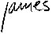

Welcome to my home page! I'm one of the English teachers in the
Language Department at the ENST here in Paris (and also at SUPELEC which is out in the country about 20kms south of Paris)
Besides teaching English I'm also a sculptor.
This is one of my sculptures. It's called "La Grande Femme" and is a small bronze.
(Click on the picture to see it full-size.)
(Would you like to see some other sculptures and drawings I've done?)
If you're in Paris and you'd like to see more there are always a few of my pieces at the:
The 23rd of May from 6pm to 10pm, the 24th and 25th of May from 3pm to 8pm
Galerie Sculptures, 11 rue Visconti, Paris 75006 near metro St. Germain des Prés
The Galerie Sculptures is open everyday from 11 am to 7 pm except for Sunday and Monday.
On May 23rd, 24th, and 25th there is the annual open-house exhibit in the artist studios in Gentilly, next to Paris, where I live: Zig-Zag a Gentilly -- Ateliers Portes-Ouvertes
Information stand and maps at the exit of the Gentilly train station (RER GENTILLY).
When I'm not sculpting I'm teaching English to engineering students. Please go to the modern language department at the ENST to learn more about the language department that I spend most of my time in.
Since 1991 I've been involved with many different projects using the Internet to help my students improve their English. Last year (1994-1995) two of them were the Hut Writing Project and the Cities Project. The Internet opens up a lot of possibilities to the language classroom. Some of the courses I've been teaching in the last years have been about exploring the internet. At the ENST some of my students are making a web page for our Internet Projects Class. Have a look and tell us what you think.
This academic year my students are again participating in an International Writing Exchange organized by Ruth Vilmi at HUT (the Helsinki University of Technology). (Ruth has lots of interesting things to visit on her page.) This spring different classes are participating in the IWE in France, Finland, Korea, Egypt, Spain, Mexico and the US.
Another project that's very important to me is the International Email Tandem and Forum Project organized by Helmut Brammerts at the Ruhr-Universitat in Bochum Germany.
I'm one of the coordinators of the Discussion Group.
If you're a French speaker and you'd like to have an English, Irish, American or Australian student to write to via email go to the ENG-FRA Page to ask for a TANDEM partner.(And of course do the same thing if you're an English speaker and you'd like a French speaking partner!) :-)
Here are some of my favorite links (the first ones are the most recent) that I think might be interesting for you to look at:

benenson@enst.fr
(Click on my name to send me a message if your browser can send mail.
I'd really like to know what you think of this page... which of course is still under development.)
{kind=link}